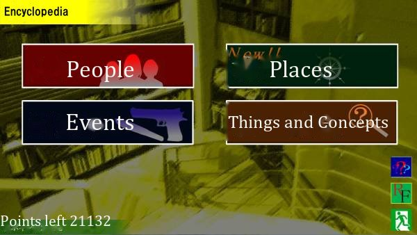
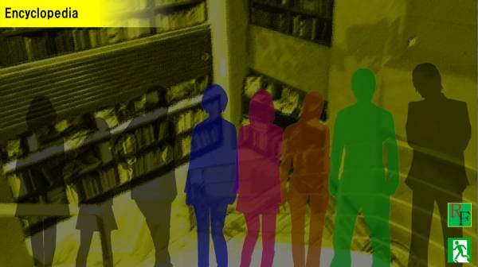
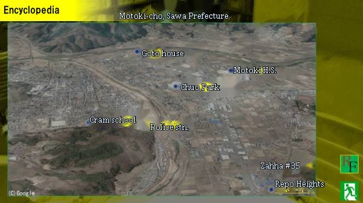
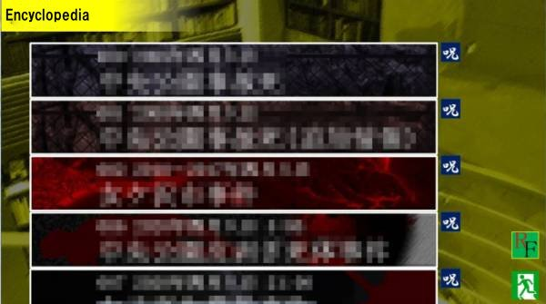
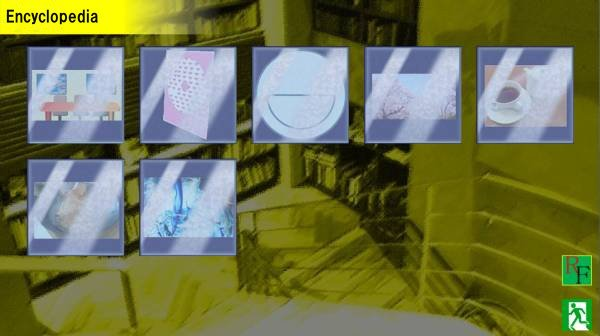

Script 00001878
…
This is your first time coming here, is it not? I shall explain how to use this place.

As you see, the encyclopedia is divided into four categories: 'People,' 'Places,' 'Events' and 'Things and Concepts.'

In 'People,' you may view information on the main people who appear.
As the scenarios progress, the number of people you can view will increase. Please consider that, as a rule, you can view a person's information right after their first appearance.

Next is 'Places.' Here, it is possible to view information on the places that appear in this world.
You-sama, there are likely places that do not exist in your world, so it would be well to view them here, even place names you have seen.
As the scenarios progress, the places you can view will increase as well.

Next is 'Events.' It is possible to view information on the incidents that have occurred in this world.
The incidents of this world are extremely peculiar, and I believe it would be quite difficult to remember them at a glance.
When you wish to check the details of an incident again, please look here.

Lastly, 'Things and Concepts.' It explains the principal items and objects, concepts and intangibles that appear in this world.
Even things familiar to you, You-sama, may carry a special meaning in this world.
It would be well to check these once through as well.
And this is important: the contents of the encyclopedia increase not only with the scenarios, but also with how much of the References you have viewed.
It is possible to follow the scenarios of this world without looking at the References. However, how deeply you can come to know it is another matter.
If you wish to know it more deeply, please check both the References and the encyclopedia thoroughly.
Ah, yes, there is a button marked 'RF' on the right side; clicking this button moves you directly to the References.
There is a similar button on the References side as well, so please use these to go back and forth between the References and the encyclopedia.
It is also possible to move to the References with the R button, and to the encyclopedia with the D button.
Also, right-clicking the back button cancels everything and closes the encyclopedia.
That concludes my explanation of the encyclopedia. Shall I explain it once more?
Certainly. I shall explain.
Then I shall take my leave. If you would like to hear the explanation again, please call me once more.
Which item shall I explain?
In 'People,' you may view information on the main people who appear.
As the scenarios progress, the number of people you can view will increase. Please consider that, as a rule, you can view a person's information right after their first appearance.
However, please note that the path a character follows may differ by arc or route. Information unique to a route is marked with the cited scenario and so on in parentheses.
Which category shall I explain?
Here, it is possible to view information on the places that appear in this world.
You-sama, there are likely places that do not exist in your world, so it would be well to view them here, even place names you have seen.
As the scenarios progress, the places you can view will increase as well.
It is possible to view information on the events that have occurred in this world.
The incidents of this world are extremely peculiar, and I believe it would be quite difficult to remember them at a glance. When you wish to check the details of an incident again, please look here.
To the right of each incident's banner there is an icon such as '呪'; it indicates the related arc. If it says '呪,' it is an event related to the 'Jusatsu Arc [Killing by Curse].'
It explains the principal items and objects, concepts and intangibles that appear in this world.
Even things familiar to you, You-sama, may carry a special meaning in this world.
It would be well to check these once through as well.
In every category, the information you can view increases as the scenarios progress.
An announcement is made each time the information increases, so please check it.
In the 'People' category in particular, information on the same person keeps being added according to how far you have progressed.
Even for people you have seen, please check from time to time whether they have been updated.
And this is important: the contents of the encyclopedia increase not only with the scenarios, but also with how much of the References you have viewed.
It is possible to follow the scenarios of this world without looking at the References. However, how deeply you can come to know it is another matter.
If you wish to know it more deeply, please check both the References and the encyclopedia thoroughly.
There is a button marked 'RF' on the right side; clicking this button moves you directly to the References.
There is a similar button on the References side as well, so please use these to go back and forth between the References and the encyclopedia.
It is also possible to move to the References with the R button, and to the encyclopedia with the D button.
Also, right-clicking the back button cancels everything and closes the encyclopedia.
Then I shall take my leave. If you would like to hear the explanation again, please call me once more.
…
…
…
…
…
…
…
…
Then I shall take my leave. If you would like to hear the explanation again, please call me once more.
I am sorry, but this world is extremely unstable.
Please be aware that from time to time an item appears as a string of unreadable characters.
Also, it seems that on very rare occasions an element with no connection at all to the encyclopedia slips in.
You may be very startled when that happens, but I humbly ask your forgiveness.
If something unrelated has slipped in, please let me know in Chatter. I will deal with it at once.
Let me say this in advance. It is a small hint.
The encyclopedia alone has no effect at all on the progress of this world.
Whether you look at the encyclopedia is up to you, but it will not give you any advantage in progressing.
To put it the other way, the References and Chatter...
To put it the other way, the References and Chatter...
That is how things stand.
Only those who accept the following items may use the music list.
・The copyright of the music used in this work belongs to the providers of the material. Please refrain from unauthorized use.
・The music used in this work is handled in accordance with its terms of use.
・In accordance with the terms of use, the music list plays only part of each BGM track used in this work (in many cases the terms of use prohibit treating the music as the main feature).
・The music used was permitted to be treated as free material when this work was made, but that may be different now.
・At the wish of the material providers, some tracks are now private.
・Some tracks have been heavily altered from the original.
・The copyright of the music used in this work belongs to the providers of the material. Please refrain from unauthorized use.
・The music used in this work is handled in accordance with its terms of use.
・In accordance with the terms of use, the music list plays only part of each BGM track used in this work (in many cases the terms of use prohibit treating the music as the main feature).
・The music used was permitted to be treated as free material when this work was made, but that may be different now.
・At the wish of the material providers, some tracks are now private.
・Some tracks have been heavily altered from the original.